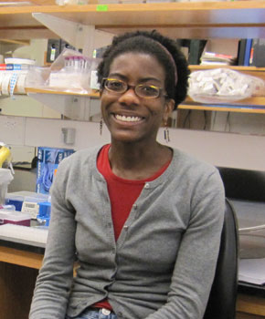

News Archives : 2010 : Microbial Land Grab!
by Cathryn Delude
March 3, 2010
Bacteria have been steadily shedding their former image as amorphous sacks of protein with simplistic, individualistic life styles, and one of the newest surprises is that these complex community-dwelling organisms also have a sense of identity. That’s a discovery by Assistant Professor Karine A. Gibbs, the newest member of the Harvard Department of Molecular and Cellular Biology (MCB) who studies how bacteria segregate themselves into different populations. “It fascinates me that there is some fundamental process that allows a cell to say ‘you are different than I am.’ We find it at all levels of organisms from the smallest bacterium to the most complex organism,” says Gibbs. She hopes to someday watch how genes turn on and proteins move about in individual bacteria in one population as they meet other populations. How does a cell recognize other populations as the same or different, and how does that change its behavior?
Such scientific curiosity came early to Gibbs. Born in Jamaica, she and her family moved to Maryland when she was young. Her parents sent her to summer science camps where she made things like solar powered toys, and a high school biology teacher encouraged her to apply for summer programs at universities and government labs in the area. She spent one summer at Villanova University and the following two studying Hantaviruses at the US Army Medical Research Institute of Infectious Diseases.
By the time she enrolled in Harvard as an undergraduate in 1996, she already admired the ingenuity of microorganisms. She recalls the “fantastic” Molecular Biology course with MCB’s Richard Losick – “I may still have the course book with his notes in my basement” – and a fun seminar on bacterial circadian rhythms with Woody Hastings.
Bacteria in Motion
After Gibbs decided to major in biochemical sciences, her academic advisor suggested she do research with Roberto Kolter in Harvard Medical School on biofilms, the slimy colonies of bacteria that form on surfaces and that cause, among other things, antibiotic-resistant infections on implants and medical devices. Gibbs gave up competitive track and field – an injury had prevented her from playing her favorites, lacrosse and field hockey – to study bacteria’s twitching motility in the early stages of microcolony formation. “They grow a limb (a pilus) by stacking together polymerized proteins like a lego chain, and then they throw and yank, throw and yank to propel themselves along a surface,” Gibbs explains of this work that led to a paper in the Journal of Bacteriology.
For graduate studies in Julie Theriot’s lab at Stanford University, she switched from looking at bacteria on surfaces to the proteins on the surface walls and membranes of bacteria, looking at how these proteins move and how that movement correlates with the bacteria’s life cycle.
Before proceeding, though, she had to develop microscopy techniques for imaging these surface proteins in live cells. Florescent tags existed for proteins inside the cell, but not for surface proteins. Traditionally, scientists had to kill and stain the bacteria to see the surface proteins. “That gave a snap shot in time, like an old family photograph,” Gibbs says. “But you don’t know what happened before or after that photo was taken. Were they always a happy family?”
Working with two other labs, Gibbs developed two techniques – now adopted by other labs – to tag the proteins with either peptides outfitted with florescent markers or directly with colloidal gold. This allowed her to watch “movies” of the surface proteins over the microbe’s life cycle. “We used to think of a bacterium as a bag of protein with no organization, but we were surprised at their complexity,” she explains. “Their proteins move really fast, they are all over the place, and they are highly structured.”
Self-Recognition
Then Gibbs herself moved, to pursue post-graduate studies with Peter Greenberg at University of Washington, Seattle. There, she and her husband enjoyed skiing, and she began working on “the coolest bacteria ever,” Proteus mirabilis, a “kissing cousin” to E. coli that can form biofilms on urinary catheters and so costs millions of health care dollars in fighting these resistant infections.
In liquids, Proteus is a small bacterium swimming around. But when it hits a surface, like a catheter, it enters a new developmental life cycle. It grows 40 fold and sprouts flagella everywhere. “Everywhere! Then these super-long filamented cells move rapidly across the surface like those old Roman oared warships. They walk all over E. coli. They walk over Pseudomonas or any other bacterial population. Then they just stop for reasons we don’t understand, divide and become little short cells again. Then it repeats.”
The Proteus population forms a bull’s eye pattern as it advances and rests. Remarkably, two different strains of these swarms will segregate themselves. “A line literally forms between two populations, creating a barrier. But if the populations are the same strains, they merge,” Gibbs says. Since 1946 when this segregation was first observed, scientists tried and failed to explain it.
Many scientists thought the secret to those boundaries lay in the different toxins and anti-toxins that each strain makes to conduct their biological warfare. But Gibbs believes the toxins are a red herring. Instead, the lines form because of the activity of a novel set of five self-recognition genes that she and a collaborator in Greenberg’s lab identified. They called these gene ids for “identification of self.” Two of the proteins encoded by these genes appear to act as bar codes for self-identity and the other three operate like a checkout scanner reading the bar codes.
“We think it’s a primitive form of self/non-self recognition, like the major histocompatability complex (MHC) proteins in vertebrates. But here we have a visible read out of when this recognition happens – line or no line – and in a stripped down form. It’s a fantastic model system for asking direct questions about how cells recognize self as the same and non-self as different that we cannot begin to answer in organisms with complex genetics.”
Gibbs is continuing research on these bar codes in her new MCB lab. She wants to know how bacteria develop this self-recognition behavior and how it affects how the bacteria live. “Is it important in pathogenesis? We don’t know yet.”
Ten years from now, she hopes to use communities of bacteria as a model for understanding more complex communities of cells. What are worms, fish, mice or even humans but many cells working together to make that organism? In bacteria, one cell is one organism, but it works with other cells to cause multi-cellular behavior, such as is seen in the biofilms she studied in Roberto Kolter’s lab. “I’m interested in how that relation to the community comes about,” she says.
The Importance of Mentoring
Speaking of community, Gibbs is excited to be part of “a truly vibrant community” of faculty, staff and students at MCB. “People in the department have been wonderful and very helpful in my transition from Seattle, and there are so many opportunities for collaboration,” she says. “Also, the undergraduate and graduate students are very talented, which was a key recruiting point for me. My research will be enhanced by being immersed in such a scientifically diverse environment.”
Gibbs says that starting in high school, she basically just followed the recommendation of a series of “awesome mentors,” and she wants to pass that favor on to a new generation. As a Harvard undergraduate, she participated in the Phillips Brooks House Association Experimenters program, teaching science in Cambridge elementary and middle schools. In graduate school she worked one-on-one with undergraduate students.
Now as a Harvard faculty member, she wants to help students to become more confident about themselves and to discover what is truly fulfilling for them. She also gets something back, she says. “Seeing science through their eyes reminds me how exciting it really is” – as if she needed more enthusiasm.